01裂在折痕上
10 月 23 日，苹果首款折叠屏 iPhone Duo 开售。线上订单几分钟售罄，门店前排了队。
不到一周，社交平台上开始出现裂纹照片。
多名用户描述的过程几乎一样。展开手机时听到一声「咔嚓」，像什么东西断了，然后折痕位置裂开一道缝。有的屏幕右侧还出现白斑和条纹。还有人说开合变得费力，屏幕下方能摸到一点凸起，偶尔误触。
起售价 1999 美元。过了保修期换一块内屏，官网标价 999 美元。
10 月 27 日，苹果给了声明。原话是，已经留意到有极少数 iPhone Duo 的内屏出现了一些问题；遇到显示屏问题的用户，请联系 AppleCare 处理换机。
苹果同时说了一句有信息量的话，受影响的设备通常在使用的初期就会显现故障。
这句话的意思可以这样理解。麻烦在于，它反映的并非用久了磨出来的累积损伤。出厂缺陷用几天就会暴露。
- 苹果首款折叠屏 iPhone Duo 开售不到一周，多名用户报告内屏在折痕处开裂。
- 苹果 10 月 27 日承认「极少数」设备存在问题，提供换机。
- 起售价 1999 美元，过保换内屏 999 美元。
- iFixit 用拆解、专利和 CT 扫描做了铰链的 3D 模拟，把损伤位置指向一条中央支撑条。
- 苹果未公布具体原因，也未公布受影响数量。
开售一周，裂纹从折痕开始
先把已知的事实摆清。
| 项 | 内容 ||---|---|| 现象 | 展开时异响、折痕处裂纹、右侧白斑或条纹 || 出现时间 | 部分用户称最短数小时 || 其他反馈 | 开合费力、屏幕下方有凸起、误触 || 官方处置 | 承认极少数存在问题，联系 AppleCare 换机 || 未公布 | 具体原因、受影响设备数量 || 价格 | 起售 1999 美元，过保换内屏 999 美元 |
这份清单里有两条容易被忽略。
一条是「最短数小时」。这意味着它不是概率极低的偶发，而是同一批设备里有一小部分出厂就带着缺陷。
另一条是「屏幕下方有凸起」。裂纹只是结果，凸起是原因露出来的部分。用户能摸到它，说明某个零件到位得不对。
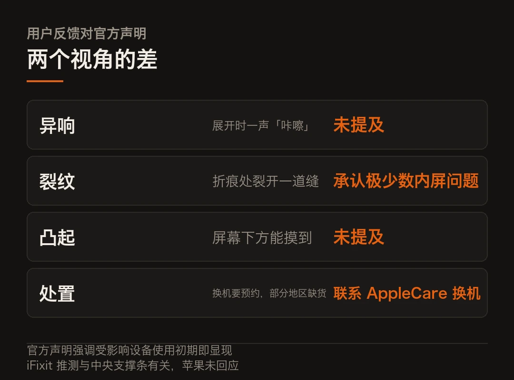
iFixit 把铰链做了一次 CT
拆解机构 iFixit 在 10 月 25 日做了拆解和防尘测试。他们用的不只是螺丝刀。
据其公布的说明，团队拿着拆解影像、公开专利和 CT 扫描，重建了 iPhone Duo 铰链的三维模型，再把这个模型和用户报告的损伤位置叠在一起比对。
结论指向一处。
报告里的损伤集中在中央支撑条附近，也就是显示排线从屏幕下方经过的那一带。iFixit 推测，在折叠过程中，那条支撑条可能没能及时让开屏幕，于是在报告的断裂位置附近形成了一个应力集中点。
这话要按推测读。iFixit 没有拿到苹果的设计文件，苹果也没有回应这个判断。这是一个基于外部观测的合理推断，不是定论。
同一份报告里还有一个反向的结论，容易被略过。iFixit 认为 iPhone Duo 是它测过的折叠屏里最好修的一台。
一台好修的手机，和一个会裂的铰链，可以同时成立。好修讲的是结构可拆解，会裂讲的是结构在动态下的公差控制。这两件事在工程上是两套指标。
换一块内屏 999 美元
这个价格值得单独说。
1999 美元的机器，换内屏要 999。也就是说，屏幕占了整机价格的一半。折叠屏的成本结构一直是这样，柔性面板、超薄玻璃、铰链、以及为了容纳这些而重新设计的主板，全压在一起。
对比一下就清楚了。别只看绝对值，直板旗舰换屏通常在 300 美元上下。折叠屏的内屏贵三倍，因为它是整台机器最难做的那一层。
这也解释了一个商业逻辑。折叠屏的售后成本天生比直板高，而售后成本最终会回到定价上。 1999 美元这个起售价里，有一部分是在为未来的维修概率买单。
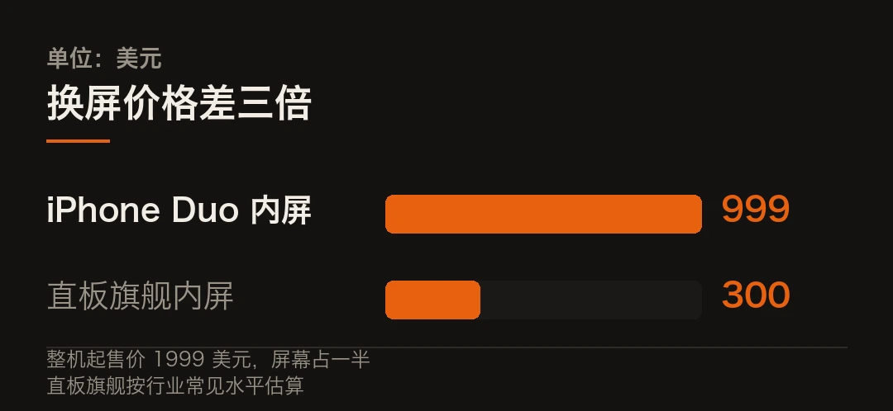
折叠屏这道题，苹果也没绕过去
苹果拖了很多年才做折叠屏，外界普遍认为原因就在铰链。
铰链难在哪儿？它从来不只是「一根轴」。几十个精密零件组成一个机构，要在几十万次开合里保持同一条折线。让屏幕不被拉伸、让灰尘进不去、让折叠时屏幕有地方「让」。
这三件事互相打架。折得越紧，屏幕弯得越狠；防尘做得越严，结构就越复杂；结构越复杂，公差累积就越难控。
2019 年三星的第一代 Galaxy Fold 就栽在这道题上。当时屏幕保护膜被误撕、杂质从缝隙进入，上市几天就停售返工。
IDC 的副总裁 Francisco Jeronimo 对这次事件的评价是，快速换机是「正确的第一步」。他特意提到了三星那一次，并且说，快速而透明的回应可以把损害控制在一个品类之内。
这个类比有分量。折叠屏不是一款产品的问题，是一个形态的问题。回应慢了，伤的是整个品类的信任。
良率的传言，和一句否认
这里有个流传很广的说法，需要小心处理。
有媒体援引富士康员工的话称，在产能吃紧的状态下，苹果此前曾降低过一定良率质检标准，以保证供应。
但同一批报道里也写了另一面。一名接近 iPhone Duo 供应链的知情人士表示，苹果内部并未采取过下调良率质检标准之类的举措。
两边的话目前都只是说法，没有可核验的证据。 苹果没有公布原因，也没有公布数量。
能确认的只有一件事，iPhone Duo 由富士康中国工厂独家生产，铰链生产在开售前被专门展示过。供应紧张也是真的，线上首批几分钟售罄。
产能紧、工艺难、良率低，这三件事在制造业里经常同时出现。但它们之间是不是因果关系，得等苹果自己的说明。
这次回应算快的
把时间线摊开看。
10 月 23 日开售。10 月 26 日海外媒体开始密集报道。10 月 27 日苹果给声明，承认问题、提供换机。
四天。对一个还在售罄状态、需求量极大的新品来说，这个速度不算慢。
而且声明的措辞有个细节。它没有否认，也没有把问题推给用户操作，直接说「极少数」并给换机方案。同时补了一句首批用户反响热烈、开发者在快速适配。
这是标准的危机话术结构，先认问题、给方案，再说基本面。你可以说它公关，但在硬件召回这件事上，先认比先辩的代价小得多。
判断
回到那条支撑条。
如果 iFixit 的推断成立，这事的性质就清楚了。它是一个零件在动态折叠时的位移控制没做到位。这类问题在量产爬坡阶段最常出现，因为它依赖公差、装配和材料批次的一致性，而不只依赖图纸。
也就是说，它更像制造问题，不是设计问题。
这个区分很重要。设计问题要改结构，改完重新验证，周期以季度算。制造问题改的是工艺参数和质检标准，周期以周算。前者会影响这一代产品的整个生命周期，后者可以在几批货之内收敛。
所以真正该看的是下一个月的返修率。这一周的新闻热度未必说明什么。
还有一个更长期的问题。折叠屏走到第八年，屏幕、铰链、防尘都进步了很多，但它始终是一门「所有零件都必须同时对」的生意，任何一个零件差一点，整台机器就退回来。
这也是为什么这个品类的价格一直下不来。技术并不是不成熟，真正的问题是容错空间太小。
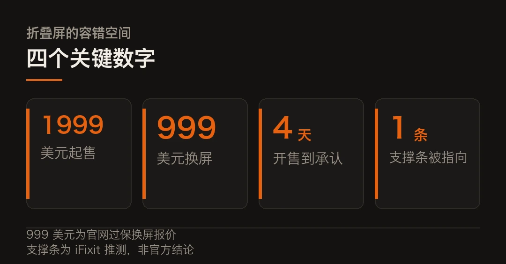
内屏开裂的具体原因，苹果尚未公布，本文不对成因下结论。iFixit 关于中央支撑条的判断属其基于拆解与模拟的推测，苹果未回应。
关于良率质检标准的说法，报道中同时存在「媒体援引富士康员工」与「接近供应链人士否认」两面，本文并列呈现，不作判定。受影响设备数量亦未公布。本文仅作事实转述，不构成任何购买建议。
本文信息来源
- CGTN — Apple says it will replace iPhone Duo units showing screen problems（2026-10-27） · news.cgtn.com
- 环球网 — 苹果回应 iPhone Duo 内屏破裂，承认少量设备受影响并提供更换（2026-10-27） · 3w.huanqiu.com
- 中国经济网 — iPhone Duo 内屏开裂，苹果回应（2026-10-27） · m.ce.cn
- 中国网 — 苹果回应部分 iPhone Duo 内屏开裂，极少数出现问题（2026-10-27） · finance.china.com.cn
- iFixit — iPhone Duo 拆解与铰链三维模拟说明（2026-10-25） · ifixit.com
- 爱范儿 — 早报：苹果回应 iPhone Duo 内屏开裂（2026-10-27） · ifanr.com
02给 agent 装一道闸门
AgentTrust 这个项目，做的事情很窄。
它坐在 agent 运行时和工具执行之间。每一个 agent 准备执行的动作，先过它这一关。
扫参数里有没有提示注入的痕迹、有没有泄露的密钥，算一下这个动作的爆炸半径和花费上限，碰到危险动作就挂起，等人批。
动作执行完，事件写进一本签名的审计账本。
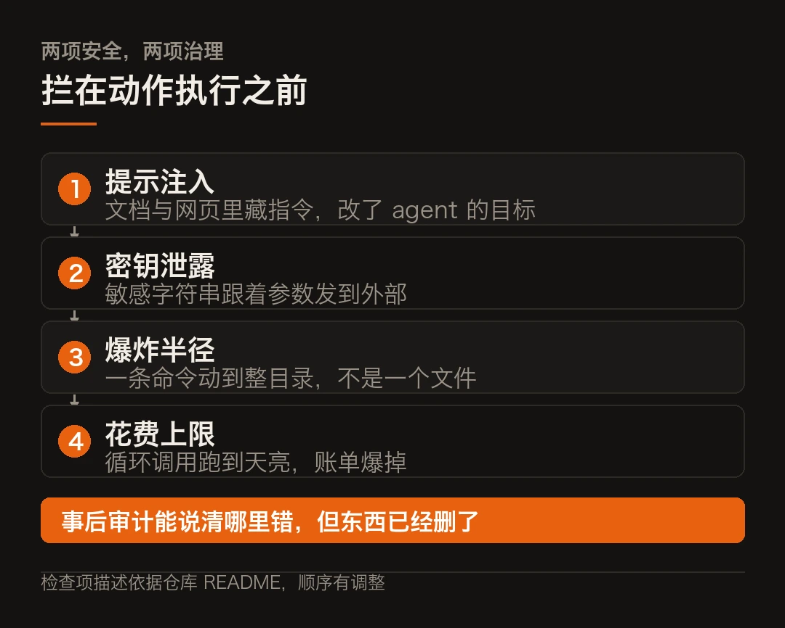
仓库 Apache-2.0，带 Python、TypeScript、Go、Rust 四套 SDK，附一个本地看板。
- AgentTrust v1.0.0 于 10 月 25 日发布，Apache-2.0。
- 拦在动作执行之前，不等事情发生再查。
- 检查四件事，提示注入、密钥泄露、爆炸半径、花费上限。
- 危险动作挂起等人工批准，事件写入签名审计账本。
- 项目很年轻，约十几个星，安全声明没有经过独立验证。
为什么这个位置值得一个独立项目
现在给 agent 加限制，主流做法有两种。麻烦在于，两种都有洞。
一种写在系统提示里。「不要删除文件」「不要动系统目录」。这种做法的问题显而易见，提示词是软的，模型可以不理，也可能被一句注入说服。一句话就能推翻的东西，不算限制。
另一种写在工具封装里。每个工具自己做参数校验。这种做法有效，但要每个工具写一遍，写漏一个就是缺口。工具一多，这件事就没法保证。
AgentTrust 选的是第三条路。它不假设模型守规矩，也不要求每个工具都自带安检，而是在外面架一层统一的门。
这里有个判断，这个位置早该有人占。
因为 agent 的危险不在「说错话」，在「做错事」。而做错事的动作，总要经过一个具体的调用，所有调用都要过同一个口子，那就是唯一的可靠拦截点。
为什么统一入口比分散校验可靠？因为流程越灵活，能绕开的路径就越多，而统一入口的全部价值恰恰在于，它让「绕开」这件事没有第二条路可走。
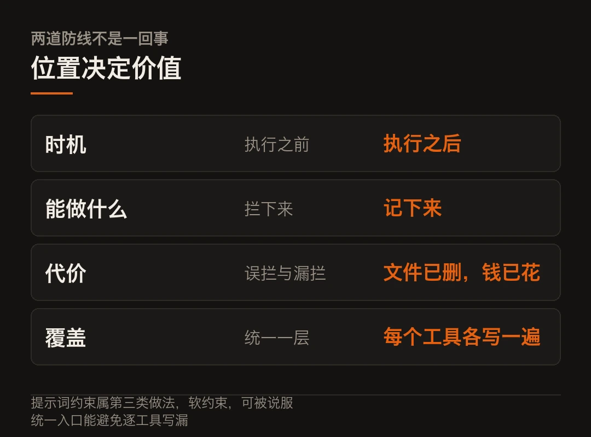
它检查的四件事
拆开看这四项检查，能看出设计者的取舍。
| 检查项 | 防的是什么 | 失败长什么样 ||---|---|---|| 提示注入 | 网页、邮件、文档里藏指令 | agent 被一段文本说服，改了自己的目标 || 密钥泄露 | 敏感字符串进到参数里 | 一次 API 调用把 token 发到外部 || 爆炸半径 | 一次动作影响多少东西 | 一条命令删掉整目录而不是一个文件 || 花费上限 | 累计开销失控 | 循环调用跑到天亮，账单爆掉 |
前两项是安全，后两项是治理。这个组合说明它的定位是防自己人。往实里说，防的是自己养的那只 agent 在没人看着的时候干出格的事。
爆炸半径这个概念值得单独讲。它问的是「这个操作一旦出错，影响面有多大」，够不上「这个操作危不危险」。
同样是写文件。往 /tmp 写一个临时文件，半径是零。覆盖一个配置文件，半径是整个服务。同一条工具调用，风险差三个量级。
靠工具自己判断，很难判断准。因为它不知道这个文件在不在关键路径上。这种判断只能放在外面，放在知道全局的那一层。
怎么接进来
SDK 覆盖 Python、TypeScript、Go、Rust。
Python 那边给了装饰器写法，可以直接套在 LangChain、CrewAI 或者普通函数上，也有 LangGraph 的回调入口。
```python
# 示意写法，不是 AgentTrust 的真实 API，签名以仓库 README 为准from agenttrust import guard # 假想导入
@guard(policy="fs-readonly", cap_usd=2.0)def read_logs(path: str) -> str:
# 这个函数在真正执行前会被拦一次return open(path).read()
# 触发拦截时的行为取决于策略：
# - 扫描参数，命中注入特征就直接拒
# - 参数里出现疑似密钥，拒并记进审计账本
# - 超出 cap_usd 或爆炸半径，挂起等人批```
本地还带一个看板，能看到拦截记录和待批队列。
这几样凑起来，用法就清楚了。权限照给，但给完之后你还睡得着。
这算不算一个合格的安全边界？还得看它自己扛不扛得住。
这个项目现在不该被当成什么
得说清风险，不然这段话就成了推荐。
它很年轻。据仓库页面，v1.0.0 是 10 月 25 日打的标，星数大概十几个。这个体量的项目，安全声明基本等于作者自述。
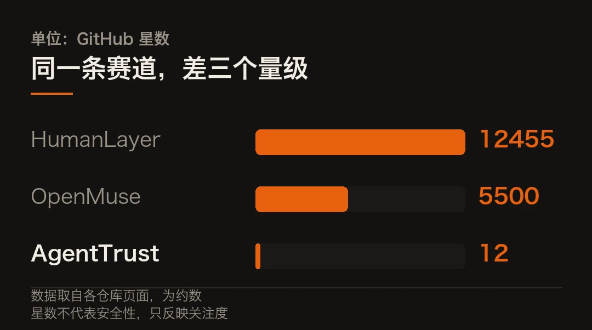
它的 LICENSE 文件写的是 Apache-2.0，但 README 上的徽章又写 MIT 加商业授权。这种不一致本身就该让人停一下。
它的检查规则跑在 agent 和工具之间，它自己成了一层中间人。这一层要是被绕过，或者它自己的策略解析有漏洞，防护就是零。
还有一个更隐蔽的问题，误杀。检查严了，正常动作被拦，人的第一反应是放宽策略，或者干脆关掉它。一个总在误杀的安全层，最后一定会被人绕过。
所以现阶段的合理用法是，把它当成一个思路参考，加上一个可选的第一道筛子。
不适合的用法，是把它当成生产环境的安全边界。真要往生产上加，得先自己审一遍源码，再把关键策略写成测试用例，最后做一轮红队。
这类项目会变多
把镜头拉远一点。
这一周里，各类「agent 治理」项目同时在冒。HumanLayer 做多 agent 的控制面，据其仓库说明是 Apache-2.0，一万两千多星。Optio 把 CI 失败后的 agent 恢复改成了通用工作流平台。Radian 在 Rust 单二进制里塞了一个带闸门的编排器，只合并通过 gating 的任务。
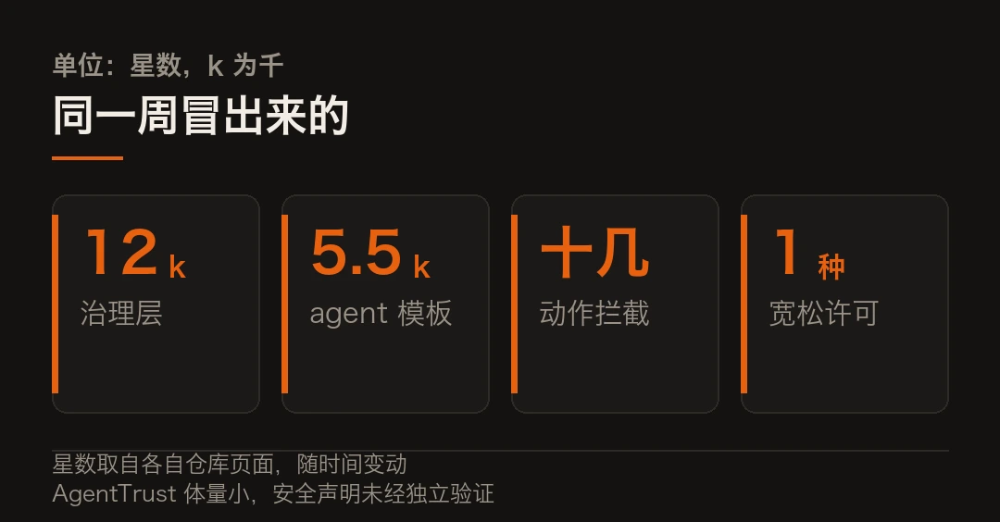
方向一致。前两年比的是 agent 能干什么，现在开始比怎么管住它。
推动这件事的是账，并非道德。
一个会自己调工具、自己循环、自己花钱的东西，一旦接进真实系统，出错的方式就从「答错一句话」变成「做错一件事」。答错可以重问，做错要恢复。
恢复成本有多高，取决于它动过什么。删掉的文件能不能从备份找回来，发出去的数据能不能撤回，花掉的钱能不能退。大部分情况下答案是三个「不能」，而这三个不能恰好覆盖了 agent 最容易犯的那几类错。
所以治理层会变成标配，跟当年日志、监控、告警走过的路一样。先是可选项，再是加分项，最后是没它就不让上线。
AgentTrust 现在的位置大概在第一步。它可能活不下来，但这个位置会有人占住。
我打算怎么试
光看 README 判断不了一个安全工具。这话得说在前面：我还没上手跑过，说不出它在真实负载下漏不漏。
如果这周排得开，会照这个顺序试一遍。
第一步，把 SDK 装进一个隔离容器，跑通它自带的示例。这一步只验证接口对不对，不验证安全。
第二步，写五个必拦的用例。去读系统密码文件、往参数里塞一个伪造的云厂商访问密钥、删一个不存在的目录、连续调用一百次超预算、让 agent 去读一个带注入指令的网页。五个全拦住，才算基本及格。
第三步，写五个必不拦的用例。正常读文件、正常搜索、正常写临时文件。这一步查误杀率。误杀高的安全层活不过一周。
第四步，也是最重要的一步，看它的审计账本能不能当证据用。出了事，我能不能拿这本账回答「谁在什么时候批准了什么」。
四步跑完大概两天。跑完出结果，我再写一篇。
AgentTrust 的星数、许可证表述与安全能力均以仓库现状为准，其安全声明未经独立验证。代码块为示意写法，非真实 API。文中「我打算怎么试」为计划，尚未执行。本文仅作事实转述，不构成任何安全建议。
本文信息来源
- AgentTrust — 仓库与 v1.0.0 发布说明（2026-10-25） · github.com
- my2cents.ai — Open Source Agent Tools: October 26, 2026（2026-10-26） · my2cents.ai
- HumanLayer — 仓库说明（2026-10-26） · github.com
- zendot.org — HumanLayer: Steer Claude Code, Codex and Other Coding Agents From One Place（2026-10-26） · zendot.org
- vibecodes.net — Agent Swarm 工具索引（2026-10-26） · vibecodes.net
03长出米级单晶
10 月 21 日，《自然》刊出一篇论文，标题是「超长与架构化单晶的增材制造」。
5 天后，同一条线上又出了一条消息。论文第一作者、北京理工大学教授刘长猛创办的公司巨型智造，完成数千万元天使轮融资，国鼎资本和云时资本联合投。
论文和融资隔了五天。麻烦在于，它们其实是同一件事的两次确认。
这活儿的难点，藏在一句假设里
单晶材料在高温合金、半导体、光学材料里不可替代，因为它内部没有晶界。晶界在常温下能强化金属，但在高温下是蠕变和断裂的起点。
传统怎么造单晶？定向凝固、区熔、单晶铸造，三条路。核心都是先造出一颗「种子」，再让熔体沿着种子的取向凝固，把取向一路传下去。
这条路依赖一个前提，叫准稳态热场。温度梯度平稳，凝固过程可以按稳态处理。
增材制造把这套前提打碎了。
激光或电弧扫过去，温度梯度快速变化，冷却速率极高，而且一层一层反复热循环。前一层刚凝完，后一层又把它重新加热。
在这样的条件下，定向热流会被循环热扰动破坏，凝固前沿的凸性丧失，宏观复杂结构和微观单晶生长直接冲突。三重挑战，一条比一条硬。
所以过去业内的判断是，增材制造能做出复杂形状，做不出大尺寸单晶。这话听着绝对，但当时确实如此。
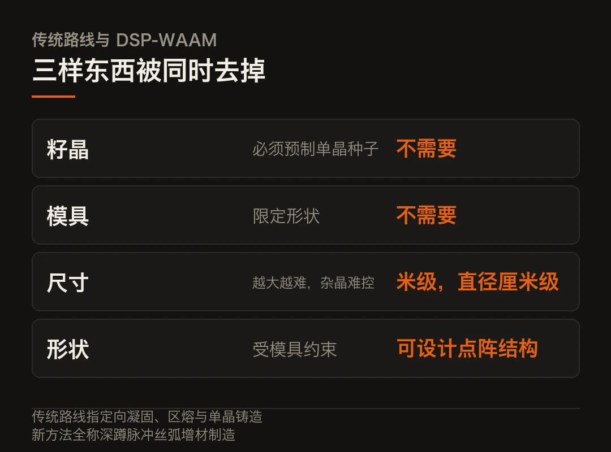
「深蹲脉冲」不消灭失稳，它利用失稳
团队的解法叫深蹲脉冲丝弧增材制造，缩写 DSP-WAAM。
逻辑不复杂，但很巧。他们用超高峰值电流和超低基值电流交替的脉冲模式，让温度梯度与凝固速率之比发生准周期振荡。
关键在那句「仅非重熔区需满足外延生长条件，偏离区在沉积中会被重熔」。
意思是，不要求每一次沉积都长对。允许一部分区域长偏，下一层把它重熔掉，重新长。
这样就形成了间歇、自校正、逐层稳定的单晶生长。它不是在稳定里长，是在反复失控里自我纠正。
这套方法最反直觉的地方，是它把「长偏」纳入了工艺，而不是当成废品。
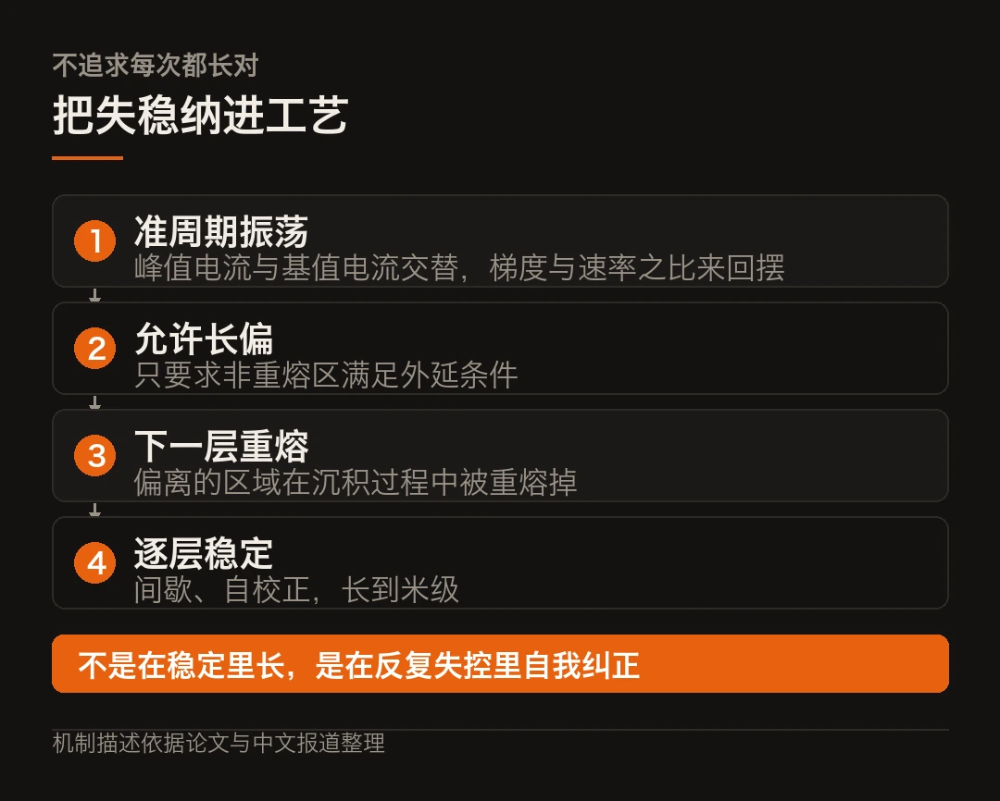
配套还有两个细节。
基值阶段用小液滴限制熔池的横向铺展，峰值阶段形成宽而浅的熔池，在表面张力和马兰戈尼力作用下得到凸形凝固界面。凸形界面是单晶外延的几何前提。
送料和轮廓形成也被分开做。靠表面张力和快速凝固，让悬空结构不塌。
一套下来，结果是无需预制籽晶，从普通多晶基板直接长出高度达米级、直径达厘米级的单晶。
抗蠕变超出一个数量级，机制也变了
用 Ti-6Al-4V 钛合金做验证，性能是这样的。
抗蠕变抗力相比标准晶粒尺寸缩放预测，提高了一个数量级。相比传统锻件和增材制造的多晶材料，也是数量级的改善。
「超出晶粒尺寸缩放预测」这句话是重点。它说明性能提升不能只用「晶粒变大了」来解释，机制本身变了。
论文的归因是，晶界消除加上增材制造诱导的分级 α/β 架构，协同调控了位错密度、迁移率和空洞演化。
还有一个反直觉的发现。即使在位错主导的蠕变条件下，晶界对宏观性能仍然有重要影响。这给单晶合金的高温服役能力补了一块机制上的认知。
方法本身也有普适性。团队还打印出钨、钼、铌以及钼铌合金的单晶，全是难加工难熔金属。深空核动力、先进核能装置需要的单晶构件，这是制造基础。
《自然》同期配了 News & Views 评述，说这项工作「为未来技术与科学发展创造了令人振奋的机遇」。
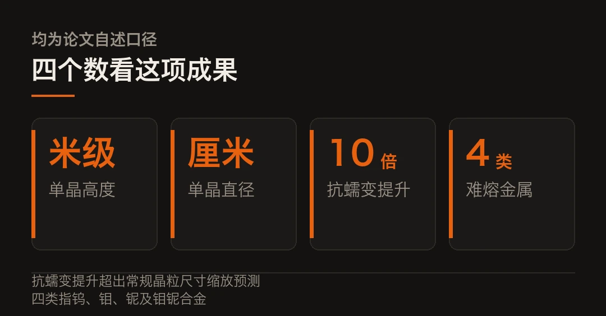
从论文到 20 米级装备
这里能看到一条不太常见的路径。
多数论文止步于样品。这次没止步。
团队自研的多弧并行增材制造装备，能做到 20 米级超大型金属结构的一体化制造。它搭载多弧并行智能控制系统，用量化控制方程加视觉反馈解决多弧失稳，成形效率相比传统单弧机器人是量级提升。
技术路线选的是丝材电弧，不是粉末。这个选择有成本含义。丝材比粉末便宜，而且减少了对专用模具和复杂精密控温装备的依赖。
论文解决的是「能不能长出来」，产业化要解决的是「长得起不起」。这两件事的门槛不一样。
融资方给的理由也值得单独看。国鼎资本的说法是，十米级以上超大型金属构件的增材制造，长期缺乏原创性、体系化的中国方案；云时资本看的是团队「以丝材电弧切入船舶与深远海平台」的差异化路径。
一个投原创技术壁垒，一个投具体应用场景。两种逻辑都对，但指向同一个判断，这条线要往重工业走，不是往实验室走。
冷判断
把这件事拆成三层看。
材料层，它证明了单晶可以在强非平衡条件下长出来。这是理论边界的扩展，价值最长远。
工艺层，它把「不需要籽晶、不需要模具、不需要支撑」三件事同时做到了。这意味着单晶从「受模具约束的实体构件」变成「几何构型可设计的空间结构」，材料和结构可以一起设计。
产业层，它现在站的是 20 米级装备加丝材路线的组合。这条路线能不能在船舶、海洋平台、核能这些领域真跑起来，还要看良率、节拍和成本。
三层里，前两层已经成立，第三层还没验证。注意一点，顺序不能倒过来。
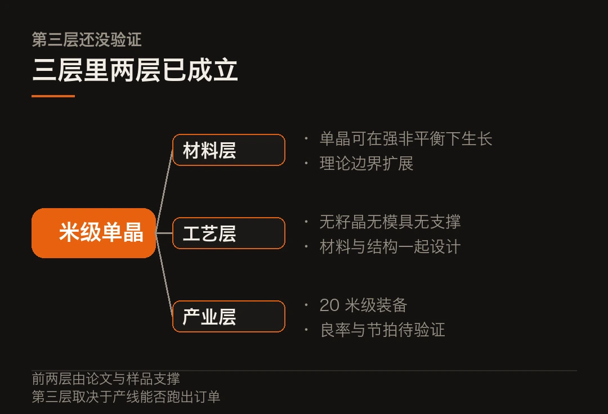
我关心的是第三层。因为增材制造这些年最常听到的问题是「打得出来，但打不快、打不便宜」。米级单晶如果只在实验室里成立，那它就是一个漂亮的材料学结果。要变成工业能力，得有人愿意为一条 20 米的产线买单。
那笔数千万的天使轮，是第一个回答。回答得对不对，要看两年后这条产线上出的是样品还是订单。
抗蠕变「一个数量级」的提升为论文自述口径。20 米级装备能力来自团队与投资方披露，非第三方验证。融资信息来自媒体报道，以公司正式披露为准。本文仅作事实转述，不构成任何投资建议。
本文信息来源
- Nature — Additive manufacturing of ultralong and architected single crystals（2026-10-21） · nature.com
- 科学网 — 研究实现米级钛合金单晶增材制造（2026-10-26） · paper.sciencenet.cn
- 网易 — Nature 重磅，中国科研团队实现米级钛合金单晶增材制造（2026-10-26） · dy.163.com
- 腾讯新闻 — 巨型智造完成数千万元天使轮融资，要把海洋装备打印到百米级（2026-10-26） · news.qq.com
- 网易 — 他创办 3D 打印企业，融资数千万元，还把论文发上 Nature 正刊（2026-10-26） · 163.com
04终端热，科学冷
今天的速览，八条。
一条放在开头，因为它跟你的钱包直接相关。后面七条按终端、半导体、科学、AI 的顺序排。麻烦在于，这个顺序本身就是这周的分野。
海外 · 苹果给 mini 换了 OLED，也涨了 1500
10 月 26 日晚，苹果官网直接上架第八代 iPad mini。没有发布会，没有预热。
这是 mini 第一次上 OLED。8.5 英寸超视网膜 XDR，边框窄了 24%，峰值亮度 1200 nits，对比度 200 万比 1。256GB 和 512GB 可选纳米纹理玻璃。
机身 5.4mm，重 255 克（前代 293 克），IP67 抗水防尘。这是 iPad 家族自 2010 年以来第一款有防护等级的机器。
A20 Pro，2nm 工艺。但规格表里有一处刀法：128GB 和 256GB 是 5 核 CPU 加单 16 核神经引擎，只有 512GB 才配 6 核 CPU 和双 16 核神经引擎，合计 32 颗 NPU 核心。
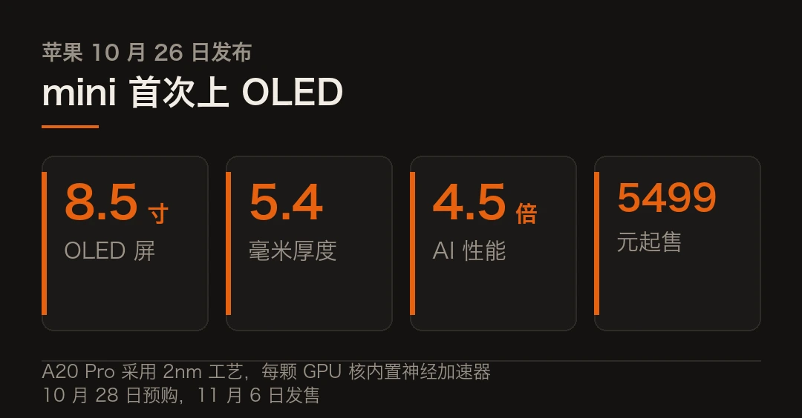
坏消息有两个。一是依然只有 60Hz，没有 ProMotion。二是起售价从上一代的 3999 涨到 5499，贵了 1500 元，顶配纳米纹理版破万。
一块挂着 XDR 头衔却没有高刷的屏幕，苹果整条产品线里只有两块，另一块是几万块的专业监视器。
国内 · 半导体两条线，一热一慢
先说端侧。瑞芯微 10 月 27 日披露三季报。
前三季度营收 44.49 亿元，同比增长 41.64%；归母净利润 13.32 亿元，同比增长 70.90%；扣非净利润 13.01 亿元，同比增长 72.09%。端侧 AI 芯片是主要拉动。
注意一点，订单受 PCB 原材料短缺和交期拉长扰动，一部分顺延到四季度等回补。四季度能补上多少？这一条决定全年能不能兑现。
再说存储。AI 服务器、高容量 DRAM 和 NAND 需求还在涨，但新增供给受厂房建设、设备交付、良率爬坡限制，短期出不来。
国产化的窗口在这里。薄膜沉积、量测检测、涂胶显影，这几道工序在先进制造里价值量高，国产化率却还低。
海外 · 五个量子比特同时操作，精度 99.99%
日本理化学研究所新兴物质科学中心与合作者，在《自然·物理学》发了一项结果。
他们让五个硅自旋量子比特共享同一条微波控制线，同时操作，精度仍然做到 99.99%。这件事难在哪儿？多个量子比特一起受控时，精度通常会被拉低。
罪魁祸首找到了，一种叫「交流斯塔克位移」的现象。名字拗口，机制不复杂。微波信号改变量子比特的有效能级，导致量子态相位偏移，而且比特越多越明显。
解法是校准。他们没有为每一种量子比特组合单独标定，而是用两两之间的校准来补偿相位偏移。这在实际系统里更实用，因为组合数是随比特数指数增长的。
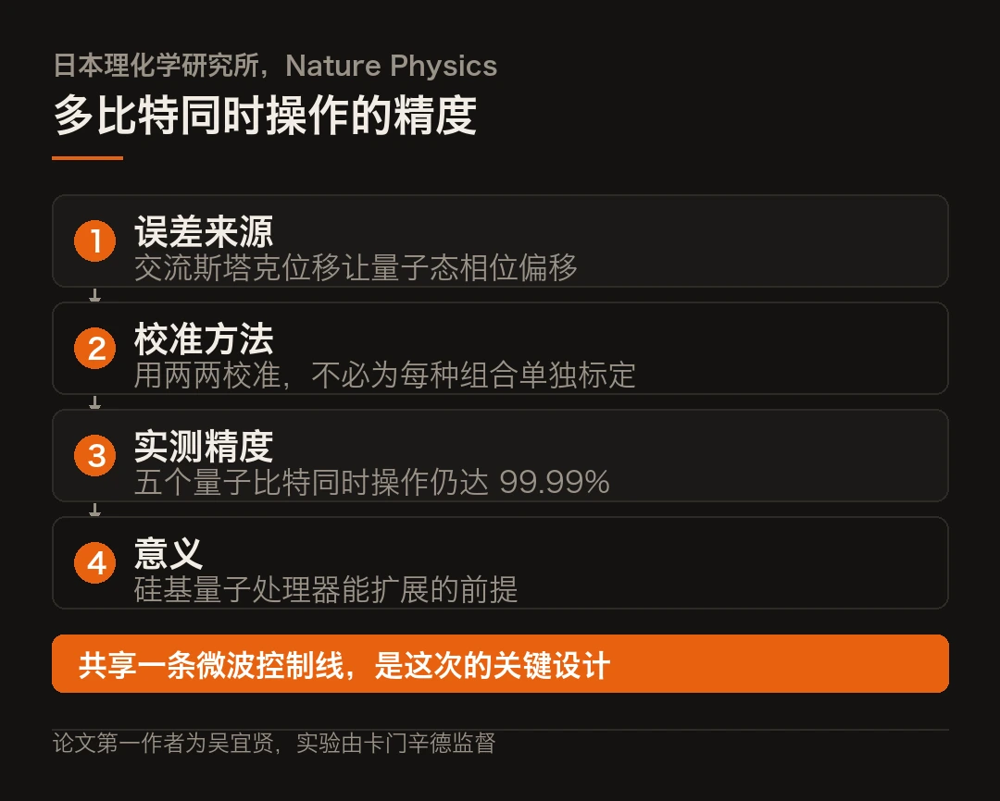
硅自旋量子比特的意义在于，它能用现有半导体工艺制造。所以精度和扩展性同时成立，才是这条路的关键。
海外 · 单个气体粒子的撞击力，第一次测到
耶鲁大学团队在《物理评论快报》发了一项测量。
他们把一颗直径 100 纳米的小球用激光悬浮在真空腔里，然后注入少量重气体，包括氪、氙和六氟化硫。通过监测小球反射的激光信号，捕捉它被单个气体粒子撞到时的位移。
量级是这样的。小球质量约千万亿分之一克，是单个气体粒子的 1000 万倍。单次碰撞的冲量最小只有十亿分之一牛顿，持续时间约十万亿分之一秒。
有用之处在哪？别只看精度，常规气压计测不了极低气压，单个粒子的碰撞力又太弱。这套装置能把碰撞频率和气压对应起来，做极低气压环境的传感器。而且不同气体的相互作用方式不同，它能分辨气体种类。
研究者的设想是，把它部署到其他星球，探测当地大气粒子的组成。
海外 · 不用电机的机械臂，靠藻类驱动
荷兰代尔夫特理工大学做了一条软体机械臂，论文发在《自然·通讯》。
驱动源是活的藻类。机械臂本体是一条绿色软带，两层不同水凝胶叠成，藻细胞附着在外层。长约 2 厘米，厚约 1 毫米。
原理是这样的。光照开启，微藻光合作用把二氧化碳转化成糖，同时用氮构建自身，这些代谢让水凝胶局部酸碱度升高。两层水凝胶对酸碱变化的膨胀程度不同，一层涨得多一层涨得少，带子就朝一侧弯。
关灯之后，细胞继续呼吸消耗产物，酸碱度降回来，水凝胶回缩。不到 10 秒，机械臂开始往反方向弯。
作用是柔和的，适合在水下碰触易损物件。研究人员也说了，目前只是概念验证，形状简单、负载很小。
海外 · 335 页招股书里的不做清单
Anthropic 的招股书公开了。
客户是亚马逊和谷歌，不是此前网传的 Cursor 或 GitHub Copilot。公司只设一个经营分部。
最值得看的是那份「不做清单」。招股书明写，尽管极具商业吸引力，但选择不开发图像生成和视频生成模型，把所有算力集中投向编程、Agent 能力和安全研究。
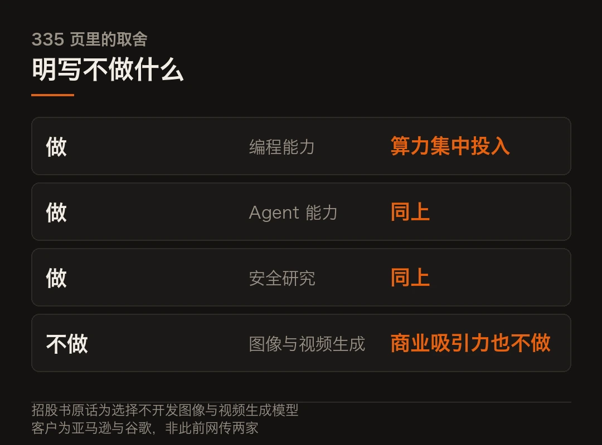
还有一个数字。今年三季度公司超过 80% 的营收，来自过去六个月内刚发布的新模型版本。
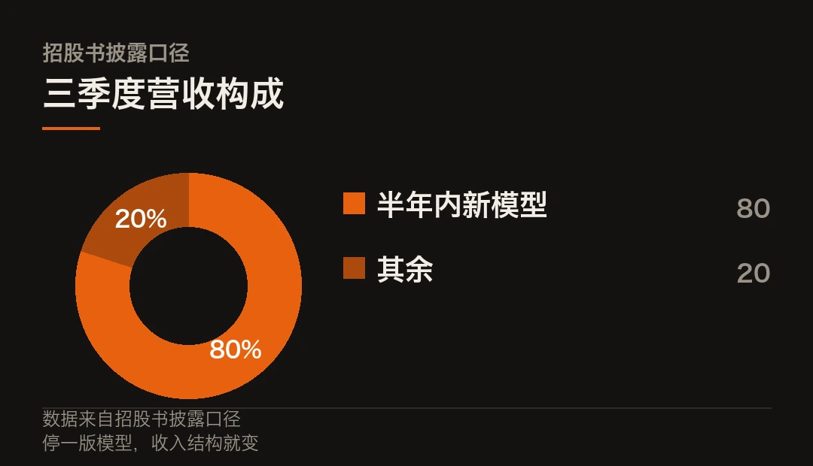
模型迭代在这里不只是研发节奏，也是营收节奏。 停一版，收入就掉。
顶配的 Mythos 走了另一条路。满血版只通过受信任计划，向经过严格审查的网安和生命科学机构定向开放；大众商用版叫 Fable，已迭代到 5.1，带安全护栏，检测到高危请求会自动拦截或降级路由。
国内 · 具身智能，一边封板一边降温
上纬新材 10 月 26 日午后封板，单日涨 20%，市值破 600 亿。
当晚公司就发了风险提示公告。原话是，消费级具身智能机器人业务目前处于规模化量产爬坡及商业化验证阶段，规模化生产、交付及商业化能力均具有一定不确定性，尚不能预测对 2026 年营收及盈利的影响。
一段公告里三个「不确定」，加上一句「尚不能预测」。
另一面，监管层提高机器人企业 IPO 门槛后，一级市场明显降温。有国资背景的投资人表示，6 月起基本不再看具身智能项目。
二级和一级看的是同一批公司，得出的结论却相反。 二级炒的是量产预期，一级算的是退出周期。
量子比特结果来自《自然·物理学》论文，单粒子测力来自《物理评论快报》论文，藻类机械臂来自《自然·通讯》论文且团队自述为概念验证。招股书内容以 SEC 披露文件为准，上纬新材的风险提示以其公告原文为准。不构成任何投资建议。
本文信息来源
- Apple Newsroom — Apple 为 iPad mini 带来重大更新（2026-10-26） · apple.com.cn
- 爱范儿 — 新 iPad mini 发布，5499 元起，应有尽有除了高刷（2026-10-27） · ifanr.com
- 36Kr — 苹果发布 iPad mini 新款，但依然没舍得给高刷（2026-10-27） · 36kr.com
- 东方财富网 — 瑞芯微 2026 年第三季度报告（2026-10-27） · quote.eastmoney.com
- 同花顺投顾平台 — 半导体设备板块大跌，存储扩产与国产替代逻辑未变（2026-10-27） · t.10jqka.com.cn
- 腾讯新闻 — 科学家攻克硅量子比特并行控制难题，精度突破 99.9%（2026-10-27） · news.qq.com
- 国际科技创新中心 — 单个气体粒子撞击纳米小球作用力首次测量（2026-10-27） · ncsti.gov.cn
- 今日头条 — 这类机械臂干活不用电机，靠光照（2026-10-26） · toutiao.com
- 量子位 — Anthropic 公开 335 页招股书（2026-10-27） · qbitai.com
- AI 日报 — 2026 年 10 月 26 日（2026-10-26） · mp.weixin.qq.com
本文首发于公众号「YITENG」。原文：daily.html
留言